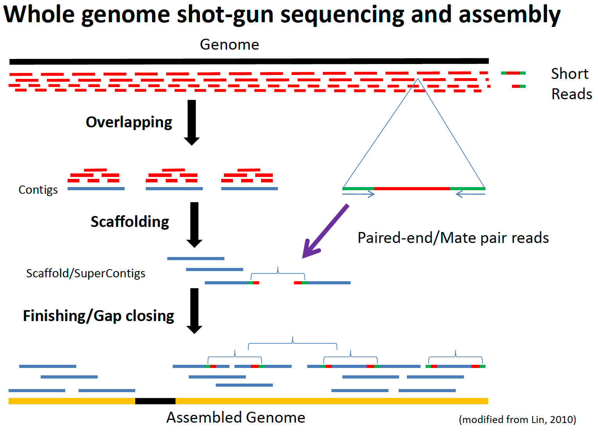

BIO721P Genome-Bioinformatics
Genome assembly
(and quality assessment)

Phd Student @ 
Bioinformatics and Population Genomics
Supervisor:
Yannick Wurm | @yannick__
Useful books
Papers


 Chen 2011
Part I - Manual genome Assembly

Part II - Reads quality assessment and cleaning
FastQC

-
Quality trimming
- Based on quality scores
-
Ambiguity trimming
- Remove stretches of N
-
Adapter sequence trimming
- Remove sequence adapters
-
Base trim
- Remove a specified number of bases at either 3' or 5' end of the reads
-
Length trim
- Remove reads shorter or longer that specified length
Diginorm
"(...)systematizes coverage in shotgun sequencing data sets, thereby decreasing sampling variation, discarding redundant data, and removing the majority of errors."
Diginorm
"(...)reduces the size of shotgun data sets and decreases the memory and time requirements for de novo sequence assembly, all without significantly impacting content of the generated contigs."
Magic? No, Bloom filters
Diginorm


Fasta

Fastq

Fastq


Interleaved format

Practical
Part III - Assembling reads
Types
Algoritms
- Overlap Layout Consensus
- De Bruijn
Strategies
- De Novo
- Reference guided
Overlap/Layout/Consensus

Overlap/Layout/Consensus
- A node corresponds to a read, an edge denotes an overlap between two reads.
- The overlap graph is used to compute a layout of reads and consensus sequence of contigs by pair-wise sequence alignment.
- Good for sequences with limited number of reads but significant overlap. Computational intensive for short reads (short and high error rate).
- Example assemblers: Celera Assembler, Arachne, CAP and PCAP
de Brujin

de Brujin
- No need for all against all overlap discovery.
- Break reads into smaller sequences of DNA (K-mers, K denotes the length in bases of these sequences).
- Captures overlaps of length K-1 between these K-mers.
- More sensitive to repeats and sequencing errors.
- By construction, the graph contains a path corresponding to the original sequence.
- Example assemblers: Euler, Velvet, ABySS, AllPaths, SOAPdenovo, CLC Bio


Too many assemblers
seqanswers.com/wiki/De-novo_assembly
A5, ABySS, ALLPATHS, CABOG, CLCbio, Contrail, Curtain, DecGPU, Forge, Geneious, GenoMiner, IDBA, Lasergene, MIRA, Newbler, PE-Assembler, QSRA, Ray, SeqMan NGen, SeqPrep, Sequencher, SHARCGS, SHORTY, SHRAP, SOAPdenovo, SR-ASM, SuccinctAssembly, SUTTA, Taipan, VCAKE, Velvet
Benchmarking
Assembly quality assessment
-
Accuracy or “Correctness”
- Base accuracy – the frequency of calling the correct nucleotide at a given position in the assembly.
- Mis-assembly rate – the frequency of rearrangements, significant insertions, deletions and inversions.
Assembly quality assessment
-
Continuity
- Lengths distribution of contigs/scaffolds.
- Average length, minimum and maximum lengths, combined total lengths.
- N50 captures how much of the assembly is covered by relatively large contigs.

Assembly quality assessment
- N50
- NG50
N50 must die?
Assembly quality assessment
- Fragment analysis - Count how many randomly chosen fragments from a species genome can be found in the assembly
- Repeat analysis - Choose fragments that either overlap or don’t overlap a known repeat
- Gene finding - How many genes are present in each assembly? (CEGMA)
Assembly quality assessment
- Contamination - “all libraries will contain some bacterial contamination”
- Mauve analysis - Uses whole genome alignment
- BWA analysis - Align contigs to genome
- Optical Maps / Irys

Practical
Part IV - Try manual assembly again? (optional/homework)